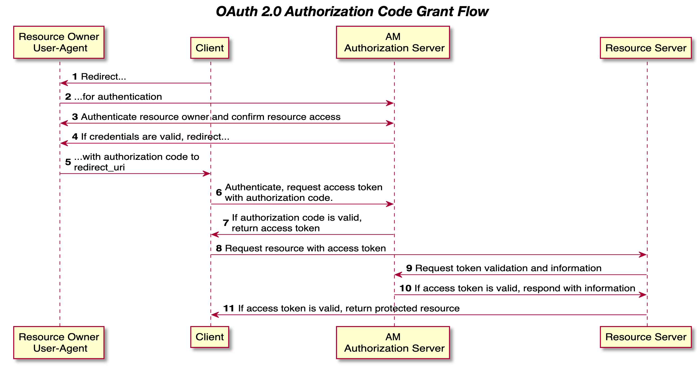

The Challenge
The organization faced a critical security bottleneck: an aging user authentication system that relied
on outdated password hashing and lacked standardized authorization protocols. This legacy infrastructure
made integrating modern mobile and web applications risky and difficult.
The request was ambitious: replace the plane engine while flying. We needed to
transition to a centralized OpenID Connect (OIDC) provider without forcing a massive password reset for
thousands of users, all while ensuring zero downtime and compatibility with legacy database schemas.
The Solution
I engineered a robust, containerized OIDC Identity Provider that serves as the
organization's single source of truth for authentication. This wasn't just a wrapper; it was a complete
architectural overhaul.
To solve the migration nightmare, I designed a "Just-In-Time" Migration Strategy. A
custom login interceptor detects legacy accounts during sign-in, verifies credentials against the old
schema, and seamlessly upgrades them to modern cryptographic hashes (PBKDF2) on the fly. This
achieved a massive security upgrade without disrupting the user experience.

Key Technical Highlights
-
Secure OAuth 2.0 Architecture & Token Lifecycle: Configured a robust OIDC server supporting multiple grants with strict PKCE enforcement against interception attacks. Designed a full token lifecycle system, including custom expiration policies and a dedicated revocation endpoint for secure session management.
-
Auto-Upgrading Security & Brute-Force Protection: Designed a custom login route that intercepts legacy authentication attempts, safely upgrading successful logins to modern cryptographic hashes dynamically. I also engineered a strict, time-based account lockout mechanism to mitigate brute-force attacks.
-
Scope-Based Resource Protection: Implemented strict access controls on API endpoints, ensuring client applications can only access user data for which they have explicitly been granted scope.
-
Optimized Internal Client Flow: Created specialized internal client logic that allows trusted first-party applications to safely bypass manual user-consent screens, streamlining the user experience.
-
Automated ETL Scripting: Built a custom data migration script using SQLAlchemy that safely processed legacy user data in memory-efficient batches, ensuring high performance and proper error rollback during the database transition.